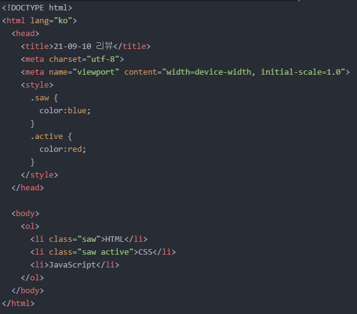

- 선택자에 대해서 자세히 알아보기
오늘의 선택자에 대해서 더 자세하게 알아보려고 합니다.
아래와 같은 코드가 있다고 해봅시다.
HTML과 CSS 이 두 가지 텍스트에 파란색을 적용해볼까 합니다.
그럼 두 가지 방법이 있겠죠.
위와 같이 'head' 태그에 'style' 태그를 넣고 선언을 해주는 방법과
위와 같이 각각의 'li' 태그 내에서 직접 적용시키는 방법이 있을 겁니다.
그런데 첫 번째 방법을 적용하면 JavaScript라는 텍스트에도 파란색이 적용될 것이고,
그렇다고 두 번째 방 을 적용하자니 코드가 중복되는 느낌이 있어 뭔가 불편합니다.
저는 그래서 새로운 방법으로 두 텍스트에 파란색을 적용시키고자 합니다.
HTML과 CSS 두 텍스트를 같은 그룹으로 묶고, 이 그룹에 파란색을 적용시킬 겁니다.
가장 먼저, 아래와 같이 코드를 작성해줍니다.
그리고 'head' 태그 내에 'style' 태그를 적용하고 다음과 같은 코드를 작성해줍니다.코드 설명을 하자면, 우선 'class' 속성은 그룹으로 묶어주는 역할을 합니다.
그리고 속성값인 'saw'는 그룹명을 나타냅니다.
그룹명은 자신이 알아보기 쉬운 단어로 써주시면 됩니다.
'head' 태그 - 'style' 태그에 작성된 코드 중 선택자 '.saw'는 클래스 선택자라 부르며, 'class' 속성의 값이 'saw'인 모든 태그에 한하여 'color:blue;'라는 효과를 적용시키는 역할을 하게 됩니다.
그 결과는 다음과 같습니다.
참고로 이 페이지와의 간섭을 막기 위해 다른 페이지를 삽입하였습니다.
삽입 페이지의 전체 코드는 다음과 같습니다.
그런데 여기서 CSS라는 텍스트에 빨간색을 적용하고 싶다면 아래와 같이 코드를 추가해 주면 됩니다.

'saw'라는 속성값 다음에 'active'라는 속성값을 적용해 주고, 'style' 태그 내에 새로운 클랙스 선택자 '.active'와 선언을 적용시켜주면 됩니다.
이때 속성값 'active'도 임의로 사용한 것이기 때문에 'saw'와 마찬가지로 자신이 알아보기 쉬운 단어로 써주시면 됩니다.
그 결과는 다음과 같습니다.
그럼 이쯤에서 한 가지 알 수 있는 사실이 있습니다.
바로 위치상 'body' 태그와 가장 가까이에 있는 선택자와 선언이 결과를 만들어낸다는 사실입니다.
텍스트 색상을 파란색으로 바뀐 다음 빨간색으로 바뀐 것이 그 증거입니다.
그런데 굳이 선택자를 'body' 태그와 가장 가까이에 위치시키지 않고도 상단에 있는 선택자가 최종 결과를 도출하도록 만들 수 있습니다.
위 예시를 기준으로 설명하자면, 'li' 태그 내에 'class' 속성 외 'id'라는 속성을 적용시키고 이 'id' 속성에 'active' 속성값을 적용시키면 됩니다.
그리고 최종 결과를 도출하는 데 사용될 선택자에서 '.'을 빼고 '#'을 넣어주면 됩니다.
아래와 같이 말이죠.
참고로 #선택자를 id 선택자라 부릅니다.
그 결과는 다음과 같습니다.
선택자 'saw'가 선택자 'active'보다 더 밑에, 즉 'body' 태그와 더 가까이에 등장했음에도 불구하고 CSS라는 텍스트가 여전히 빨간색임을 알 수 있죠.
잠깐 정리하자면, '태그 선택자-클래스 선택자-id 선택자' 순으로 영향력이 크다고 할 수 있습니다.
영향력이 크다는 것은 우선순위가 높다는 뜻입니다.
그리고 선택자가 모두 똑같은 선택자라면 위에서 배웠듯이 'body' 태그에 가까울수록 높은 우선순위를 가지게 됩니다.
그런데 여기서 알아야 될 것이 있습니다.
위 예시를 기준으로 말하자면, 'id="active"'와 같이 'id' 속성에 'active'라는 속성값을 한번 적용했으면 그다음에 똑같은 속성값을 사용할 수 없다는 것입니다.
즉, 이미 적용된 id 선택자와 똑같은 id 선택자는 쓸 수 없다는 것입니다.
사실 같은 id 선택자를 중복 적용해도 큰 문제는 없지만, 모든 사람들이 암묵적으로 따르는 룰이므로 이를 지켜주시는 것이 좋습니다.
그럼 오늘은 여기까지만 하겠습니다.
내일도 화이팅!